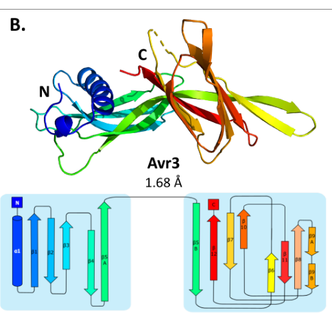

SIX1 (Secreted in xylem 1), also called Avr3, is a secreted effector of the tomato vascular wilt fungus Fusarium oxysporum f. sp. lycopersici. The gene encodes a 284-residue (about 32 kDa) precursor with an N-terminal signal peptide and a pro-domain followed by a cysteine-rich mature region; a 12 kDa cysteine-rich species derived from the central part of the protein was the first fungal protein identified in the xylem sap of infected tomato. The gene is expressed almost exclusively during host infection, is strongly induced on contact with tomato roots and in hyphae colonising xylem vessels, and depends on the nuclear regulator Sge1. Six1 is required for full virulence on susceptible tomato, but its host target and biochemical mechanism are unknown. In tomato carrying the I-3 resistance gene, which encodes a plasma-membrane S-receptor-like kinase, Six1 acts as the avirulence determinant: SIX1 deletion breaks I-3-mediated resistance and reintroduction restores it. Complementation with homologues from a cape-gooseberry-infecting forma specialis showed that recognition by I-3 can be separated from the virulence activity, which suggests direct recognition. I-3-mediated recognition of Six1 is suppressed by another effector, Avr1 (SIX4). The crystal structure of Six1 (residues 22-284) shows a disulfide-stabilised two-domain fold, an N-terminal domain of one alpha-helix and five beta-strands plus a C-terminal beta-sandwich, which defines (with Avr1) the FOLD (Fol dual-domain) effector family. No enzymatic or other molecular activity has been demonstrated.
| GO Term | Evidence | Action | Reason |
|---|---|---|---|
|
GO:0020002
host cell plasma membrane
|
IDA
PMID:25740416 The tomato I-3 gene: a novel gene for resistance to Fusarium... |
UNDECIDED |
Summary: PHI-base IDA annotation from the paper that cloned tomato I-3 and showed that it encodes an S-receptor-like kinase (SRLK) conferring Avr3-dependent resistance. Only the abstract is cached and no PMC full text exists. The abstract reports no localisation experiment on Six1/Avr3; the plasma-membrane protein in this system is the receptor I-3, and Six1 itself has so far been detected only in xylem sap, outside host cells.
Reason: An IDA localisation of Six1 to the host plasma membrane would be a notable finding, since Six1 is known as a xylem-sap (apoplastic) protein and the I-3 receptor is the plasma-membrane component. The cached abstract describes only map-based cloning and transgenic complementation, and does not state that Six1 was localised. It is possible that the annotation reflects localisation of I-3 rather than Six1, or a Six1-binding or localisation experiment in the full text. I could not read the full text, so per policy this is left UNDECIDED rather than removed.
Supporting Evidence:
PMID:25740416
Here, we describe the fine mapping and sequencing of genes at the I-3 locus, which revealed a family of S-receptor-like kinase (SRLK) genes.
PMID:15387816
The central part of Six1 corresponds to the 12 kDa protein found in xylem sap of infected plants.
|
|
GO:0043657
host cell
|
EXP
PMID:23596453 A nuclear localization for Avr2 from Fusarium oxysporum is r... |
REMOVE |
Summary: PHI-base annotation from Ma et al., a full-text paper about the nuclear localisation of a different effector, Avr2 (SIX3). In this paper SIX1/AVR3 appears only as a promoter-reporter: the fungal strain used has the Avr3 coding sequence replaced by GFP, so GFP marks AVR3 promoter activity in fungal hyphae penetrating roots and growing in xylem vessels. No Six1 protein was localised, and nothing places Six1 inside host cells.
Reason: Unlike the abstract-only case above, the full text is cached and every mention of SIX1/AVR3 was checked. The only SIX1-related experiment is pAVR3:GFP reporter expression, which reports fungal gene expression in fungal hyphae, not the location of the Six1 protein (which is not even produced in that strain). Biologically, Six1 is a xylem-sap effector detected outside host cells and perceived by a cell-surface receptor, and no study has shown uptake into host cells. "host cell" therefore has no support from this reference or elsewhere. The host-cell localisation in this paper belongs to Avr2. The extracellular location is captured by the NEW host apoplast annotation below.
Supporting Evidence:
PMID:23596453
In this strain the coding sequence for Avr3 has been replaced by GFP encoding Green Fluorescent Protein (Van Der Does et al., 2008). The advantage of employing the Fol-pAVR3:GFP strain is that GFP can be used to monitor the growth of Fol in roots
PMID:23596453
From three days after inoculation and onward high expression of both AVR3 and AVR2 was found in hyphae growing in the xylem vessels of tomato roots.
file:FUSOX/SIX1/SIX1-deep-research-falcon.md
No convincing evidence places Fol Six1 inside tomato cells.
|
|
GO:0140404
effector-mediated perturbation of host innate immune response by symbiont
|
EXP
PMID:15672814 Fusarium oxysporum evades I-3-mediated resistance without al... |
ACCEPT |
Summary: Rep et al. (2005) showed that the SIX1 gene of an I-3-virulent isolate is fully functional: its product is secreted in xylem sap, its deletion further increases virulence on the I-3 line and reduces virulence on susceptible lines, and it confers full avirulence on the I-3 line when moved into another genetic background.
Reason: Gene deletion and transfer experiments on SIX1 itself show that the secreted protein triggers I-3-dependent immunity (avirulence) and also contributes to virulence on susceptible plants. GO:0140404 is defined as modulation, either activation or suppression, of a host innate immune response by a secreted symbiont molecule. This neutral parent is the right level for Six1. Its recognition activates I-3 immunity, but HR-type cell death has not been shown, so GO:0080185 (activation of plant hypersensitive response) would overstate the evidence. No immunosuppressive activity of Six1 has been shown, so a suppression term would also overstate it.
Supporting Evidence:
PMID:15672814
deletion leads to a further increase in virulence on the I-3 line as well as reduced virulence on susceptible lines, and iii) the gene confers full avirulence on the I-3 line when transferred to another genetic background.
PMID:15387816
Conversely, deletion of the SIX1 gene in a wild-type strain results in breaking of I-3-mediated resistance.
|
|
GO:0140404
effector-mediated perturbation of host innate immune response by symbiont
|
EXP
PMID:18464895 Suppression of plant resistance gene-based immunity by a fun... |
ACCEPT |
Summary: Houterman et al. (2008) identified Avr1 (SIX4) as a suppressor of I-2- and I-3-mediated resistance. They used an AVR3 (SIX1) gene-replacement strain (Fol004 avr3 deletion) to show that I-3 recognition depends on Avr3, and noted that Avr3 is required for full virulence on susceptible plants.
Reason: The paper includes experiments with a SIX1 deletion strain that confirm Avr3-dependent I-3 resistance and the contribution of Avr3 to virulence. This supports the neutral perturbation term, as for the 2005 paper above. The immunosuppressive activity described in this paper belongs to Avr1, not to Six1, and should not be transferred to Six1.
Supporting Evidence:
PMID:18464895
In (F), Fol004 avr3Δ (race 1 strain Fol004 with AVR3 (SIX1) deleted by gene replacement) was used.
PMID:18464895
During evolution of the tomato-Fol pathosystem, I-2 and I-3 have evolved to recognize, respectively, Avr2 and Avr3. Since Avr3 is required for full virulence of Fol, evasion of I-3 recognition through loss of the AVR3 gene would entail a serious fitness penalty.
|
|
GO:0140404
effector-mediated perturbation of host innate immune response by symbiont
|
EXP
PMID:25740416 The tomato I-3 gene: a novel gene for resistance to Fusarium... |
ACCEPT |
Summary: Catanzariti et al. (2015) cloned I-3 and showed by transgenic complementation that one SRLK gene confers Avr3-dependent resistance to Fol race 3.
Reason: Avr3-dependent resistance conferred by the cloned I-3 gene shows from the host side that Six1 activates I-3 immunity. Abstract-only access, but the abstract states the Avr3 dependence explicitly, and the term (neutral perturbation) matches the documented role.
Supporting Evidence:
PMID:25740416
Transgenic tomato lines were generated with three of these SRLK genes and one was found to confer Avr3-dependent resistance to Fol race 3, confirming it to be I-3.
|
|
GO:0140404
effector-mediated perturbation of host innate immune response by symbiont
|
EXP
PMID:26177154 Identification of I-7 expands the repertoire of genes for re... |
REMOVE |
Summary: Gonzalez-Cendales et al. (2016) identified I-7, an LRR-RLP gene for resistance to Fol race 3. The cached full text has no experiment on SIX1: Avr3 is mentioned only in the list of strains (race 3 isolate "carrying Avr3") and in discussion of how Avr1 suppresses I-2 and I-3. The effector recognised by I-7 (Avr7) is a different, then unidentified protein.
Reason: The term itself is correct for Six1 and is kept through the three rows above. This row is removed because the cited paper has no Six1 experiment; full text was checked. Six1 was not deleted, expressed or assayed, and I-7 resistance is triggered by a different effector. The paper's statement that Avr1 does not suppress I-7 says nothing about Six1 activity.
Supporting Evidence:
PMID:26177154
Fol race 3 isolate #1943 (carrying Avr3 ) was provided by Mr Des McGrath (Agri‐Science Queensland, Australia)
PMID:26177154
It is possible that the action of Avr1 is limited to Avr2 and Avr3 through a functional relationship between the three effectors
|
|
GO:0140593
host apoplast
|
IDA
PMID:15387816 A small, cysteine-rich protein secreted by Fusarium oxysporu... |
NEW |
Summary: Six1 was identified by mass spectrometry as a 12 kDa cysteine-rich protein in the xylem sap of infected tomato. Xylem vessel lumens are part of the plant apoplast, and Six1 is perceived there by the cell-surface receptor I-3.
Reason: Location annotation, so the process participation test does not apply. GOA has no supported location for Six1 (the host cell row is removed and the host plasma membrane row is unverified), although secretion into xylem sap is how the protein was discovered and named. The GO:0140593 definition explicitly includes the lumen of xylem vessels. The same term is used for other apoplastic fungal effectors, for example Fulvia fulva AVR9 in this repository.
Supporting Evidence:
PMID:15387816
A 12 kDa cysteine-rich protein is secreted by Fusarium oxysporum f. sp. lycopersici during colonization of tomato xylem vessels.
PMID:15387816
The central part of Six1 corresponds to the 12 kDa protein found in xylem sap of infected plants.
PMID:15672814
the gene product is secreted in xylem sap
|
Q: Does the host cell plasma membrane IDA (PHI-base, PMID:25740416) reflect an experiment localising Six1 itself, for example binding to I-3-expressing cells, or the localisation of the I-3 receptor? Six1 has otherwise been found only in xylem sap.
Q: GO has no pathogen-side term for "activation of host immune response by recognition of the effector" without hypersensitive cell death, and GO:0080185 sits under a suppression parent. Is the neutral GO:0140404 the intended term for avirulence effectors whose recognition activates immunity without HR, such as Six1/I-3?
Q: Which host process does Six1 act on to promote virulence on susceptible tomato, and is this distinct from the surface that I-3 recognises (the hypervariable V130-T184 region)?
Experiment: Test direct binding of purified mature Six1 (and the non-recognised homologue SIX1a as a control) to the I-3 S-receptor ectodomain, for example by co-immunoprecipitation from Nicotiana benthamiana or by in vitro binding assays, to establish whether recognition is direct.
Experiment: Identify Six1 host interactors in tomato xylem sap and root apoplast by affinity purification-mass spectrometry, and test candidate targets for involvement in the virulence role using SIX1 deletion and complementation strains.
Experiment: Swap the hypervariable region between Fol SIX1 and Foph SIX1a/SIX1b and test the chimeras for I-3 avirulence and for restoration of virulence on susceptible tomato, to map the recognition and virulence determinants.
The research report should be a detailed narrative explaining the function, biological processes, and localization of the gene product. Citations should be given for all claims.
You should prioritize authoritative reviews and primary scientific literature when conducting research. You can supplement
this with annotations you find in gene/protein databases, but these can be outdated or inaccurate.
We are specifically interested in the primary function of the gene - for enzymes, what reaction is catalyzed, and what is the substrate specificity? For transporters, what is the substrate? For structural proteins or adapters, what is the broader structural role? For signaling molecules, what is the role in the pathway.
We are interested in where in or outside the cell the gene product carries out its function.
We are also interested in the signaling or biochemical pathways in which the gene functions. We are less interested in broad pleiotropic effects, except where these elucidate the precise role.
Include evidence where possible. We are interested in both experimental evidence as well as inference from structure, evolution, or bioinformatic analysis. Precise studies should be prioritized over high-throughput, where available.
The research target is the fungal protein specified by the user as UniProt Q709D8, “Secreted in xylem 1,” encoded by six1 in the tomato-wilt pathogen F. oxysporum f. sp. lycopersici (Fol). Fol-specific primary literature identifies SIX1 as Avr3: an infection-associated, secreted effector that contributes to full virulence on susceptible tomato but elicits resistance in tomato carrying the I-3 gene. It is neither the human SIX1 transcription factor nor automatically functionally equivalent to SIX1 homologues in other Fusarium formae speciales. The reviewed papers establish the Fol SIX1/Avr3 identity by name and biological system, but do not explicitly cross-reference Q709D8; one computational paper instead specifies UniProt Q709E2 for its Fol SIX1 sequence. Those accession numbers should not be presumed sequence-identical without checking their database records. (yu2024thestructuralrepertoire pages 1-2, simbaqueba2018evidenceforhorizontal pages 18-21, rep2004asmallcysteine‐rich pages 1-2, rathore2024insilicoidentification pages 3-4)
Recommended primary-function annotation: Secreted fungal virulence effector and I-3-recognized avirulence determinant involved in tomato root/vascular infection. There is no experimentally established catalytic reaction, substrate specificity, transport substrate, or validated direct virulence target for Fol Six1. Here, “effector” denotes a pathogen-secreted protein that changes the outcome of infection; “avirulence determinant” denotes the same protein when its presence allows a resistant host to detect the pathogen. (simbaqueba2018evidenceforhorizontal pages 10-14, catanzariti2015thetomatoi3 pages 1-2, sain2015theroleof pages 5-7)
The evidence hierarchy, including important negative findings, is summarized below.
| Feature | Direct finding | Inference / qualification | Strongest primary source |
|---|---|---|---|
| Target identity | The user-supplied UniProt Q709D8 is annotated as Fusarium oxysporum f. sp. lycopersici (Fol) SIX1, “Secreted in xylem 1.” Fol-specific literature equates SIX1 with Avr3 and describes a 284-aa precursor. This is unrelated to animal/human SIX1 transcription factors and must not be conflated with SIX1 homologues from other F. oxysporum formae speciales. | The reviewed papers establish Fol SIX1 = Avr3, but do not explicitly cite Q709D8. Rathore et al. instead used UniProt Q709E2; without sequence-level database reconciliation, Q709E2 and Q709D8 should not be asserted to be equivalent accessions. | Rep et al., 2004, https://doi.org/10.1111/j.1365-2958.2004.04177.x; Yu et al., 2024, https://doi.org/10.7554/eLife.89280 (rep2004asmallcysteine‐rich pages 1-2, yu2024thestructuralrepertoire pages 2-3, rathore2024insilicoidentification pages 1-3) |
| Secretion and site of action | A 12-kDa cysteine-rich species (p12) corresponding to the central region of the 32-kDa SIX1 precursor was recovered from xylem sap of Fol-infected tomato and identified by mass spectrometry. In 2024 LC–MS proteomics, SIX1/Avr3 was again detected in resistant tomato xylem sap; in the I-3 line it appeared in only 1 of 5 replicates, whereas it was a differentially accumulating protein in I-1, I-2, and I-7 lines. | The best-supported functional compartment is the extracellular xylem/apoplast during root and vascular colonization. The low detection frequency in I-3 plants may reflect restriction of fungal biomass or colonization, not absence of secretion. No convincing evidence places Fol Six1 inside tomato cells. | Rep et al., 2004, https://doi.org/10.1111/j.1365-2958.2004.04177.x; Šimkovicová et al., 2024, https://doi.org/10.3389/fpls.2024.1384431 (rep2004asmallcysteine‐rich pages 1-2, rep2004asmallcysteine‐rich pages 2-3, simkovicova2024tomatorgenemediatedresistance pages 4-5) |
| Virulence on susceptible tomato | Rep et al. initially found that SIX1 deletion did not abolish pathogenicity under a high-inoculum root-dip assay, while preliminary evidence suggested a requirement for full virulence under less favorable conditions. Later assays showed that Fol-ΔSIX1 caused reduced disease on susceptible tomato and that reintroduction of Fol SIX1 restored disease symptoms. | SIX1 is best annotated as a quantitative virulence effector required for full disease severity, not an indispensable pathogenicity gene. Homologues from cape-gooseberry-infecting strains failed to restore Fol virulence despite expression in roots, indicating host-adapted functional specificity. | Rep et al., 2004, https://doi.org/10.1111/j.1365-2958.2004.04177.x; Simbaqueba et al., 2018, https://doi.org/10.1111/mpp.12700 (rep2004asmallcysteine‐rich pages 6-7, simbaqueba2018evidenceforhorizontal pages 10-14) |
| I-3-dependent avirulence | In the original genetic study, three independent targeted SIX1-deletion mutants became virulent on I-3 tomato. Reintroduction of SIX1 into one knockout restored avirulence fully in 4 of 5 transformants and partially in the fifth. I-3 was subsequently cloned as a plasma-membrane S-receptor-like kinase, and its transgenic expression conferred Avr3-dependent resistance. | SIX1 is therefore also AVR3, an avirulence determinant necessary for I-3-mediated immunity. The genetics establish functional recognition but do not prove direct physical binding between Six1 and I-3. | Rep et al., 2004, https://doi.org/10.1111/j.1365-2958.2004.04177.x; Catanzariti et al., 2015, https://doi.org/10.1111/nph.13348 (rep2004asmallcysteine‐rich pages 4-6, rep2004asmallcysteine‐rich pages 3-4, catanzariti2015thetomatoi3 pages 1-2) |
| Protein architecture | The precursor contains 284 amino acids, an N-terminal secretion signal, a pro-domain, and a processed cysteine-rich region. X-ray crystallography of Avr3 residues 22–284 resolved the structure at 1.68 Å and revealed the new FOLD (Fol dual-domain) architecture: an N-terminal α-helix/five-β-strand domain and a C-terminal eight-stranded β-sandwich, stabilized by disulfide bonds. | SIX1 has no conventional sequence-defined catalytic domain. It is a structural member of the FOLD effector class, not an enzyme family. Electron density was continuous mainly from residue 96, although portions of the pro-domain remained associated; precursor processing and the exact active extracellular species remain incompletely resolved. | Yu et al., 2024, published 27 February 2024, https://doi.org/10.7554/eLife.89280 (yu2024thestructuralrepertoire pages 1-2, yu2024thestructuralrepertoire pages 2-3, yu2024thestructuralrepertoire pages 3-5, yu2024thestructuralrepertoire media b23338cf) |
| Infection-induced regulation | SIX1 transcript abundance was very low in axenic culture but strongly induced by living tomato-cell coculture. SIX1 expression was absent in sge1 mutants and restored by SGE1 complementation. Promoter deletions showed that the upstream mimp was dispensable, whereas a region containing conserved TCGGCA motifs was required for infection-associated expression and I-3 avirulence. | SIX1 belongs to an Sge1-dependent parasitic-growth/effector-expression program activated by host-associated conditions. Whether Sge1 binds the SIX1 promoter directly or regulates it through intermediate factors remains unresolved. | Michielse et al., 2009, https://doi.org/10.1371/journal.ppat.1000637; Schmidt et al., 2013, https://doi.org/10.1186/1471-2164-14-119 (michielse2009thenuclearprotein pages 6-9, schmidt2013mitesinthe pages 10-11) |
| Biochemical mechanism and pathway | SIX1 deletion alters the tomato xylem proteome: the ΔAVR3 comparison yielded 37 differentially accumulated plant proteins, and 24 proteins were shared among AVR3, AVR2, SIX5, and SIX6 knockout responses. Interaction screens have reported small heat-shock proteins as candidates, but no validated molecular target or reaction has been established. | No enzyme activity, catalytic reaction, substrate specificity, transporter substrate, or confirmed host binding partner is known. The most defensible primary function is extracellular effector-mediated promotion of vascular colonization/full virulence, counterbalanced by I-3-triggered immunity. Shared PR-protein accumulation is a defense correlate and must not be labeled a Six1-specific pathway. | Gawehns et al., 2015, https://doi.org/10.3389/fpls.2015.00967; de Sain & Rep, 2015, https://doi.org/10.3390/ijms161023970 (gawehns2015theeffectorrepertoire pages 6-8, sain2015theroleof pages 5-7) |
Table: Evidence matrix for the user-supplied Fol SIX1/Avr3 accession Q709D8, separating direct experimental findings from inference and unresolved accession or mechanistic questions.
Rep and colleagues identified a 12-kDa cysteine-rich protein in xylem sap of infected tomato by mass spectrometry and traced its peptides to the central portion of the fungal SIX1 translation product. The Fol007 sequence encodes a 284-amino-acid, approximately 32-kDa precursor with an N-terminal signal peptide predicted to direct entry into the secretory pathway; the sap-associated 12-kDa species is much smaller than the predicted signal-peptide-cleaved precursor. Thus tomato xylem sap—the extracellular vascular compartment—is directly demonstrated, whereas the precise processing steps and all extracellular molecular species have not been completely established. Transcription in infected roots establishes expression during root infection, not a measured concentration of Six1 protein in a particular root cell compartment. (rep2004asmallcysteine‐rich pages 1-2, rep2004asmallcysteine‐rich pages 2-3)
A 2024 mass-spectrometry study independently detected Fol SIX1/Avr3 in sap from infected resistant tomato lines. SIX1 was differentially abundant relative to mock controls in I-1, I-2 and I-7 lines, but was detected in only one of five I-3 samples; differences in fungal colonization or biomass could explain this contrast. Accordingly, absence of a reliable SIX1 signal from I-3 sap does not imply that Fol cannot secrete it in an I-3 plant. The extracellular xylem/apoplast is the best-supported site relevant to I-3 perception; uptake of Fol Six1 specifically into host cytoplasm has not been demonstrated. (simkovicova2024tomatorgenemediatedresistance pages 4-5, simkovicova2024tomatorgenemediatedresistance pages 5-7)
Expression is coupled to the fungal infection program. In a primary coculture experiment, Fol SIX1 transcripts were low in axenic medium, rose strongly upon incubation with living tomato cells, disappeared in sge1 mutants and returned after SGE1 complementation. Promoter-deletion experiments further showed that removal of an upstream miniature Impala element (mimp) did not prevent infection-associated expression, whereas removal of a region containing conserved TCGGCA motifs reduced expression and abolished I-3-dependent avirulence in the tested transformants. These experiments establish regulatory dependence, not direct binding of Sge1 to the SIX1 promoter. (schmidt2013mitesinthe pages 10-11, michielse2009thenuclearprotein pages 6-9)
Virulence on susceptible hosts. Fol lacking SIX1 causes less disease on susceptible tomato than wild-type Fol in subsequent pathogenicity assays; reintroducing Fol SIX1 restores disease symptoms. The careful distinction is full virulence, not an absolute requirement for infection. In the original 2004 high-inoculum, root-dip seedling assay, deletion mutants remained pathogenic and the authors described evidence for a full-virulence requirement under less favorable conditions as preliminary. Later knockout/complementation work supports a quantitative disease-promoting role, while the host process through which Six1 promotes infection remains unknown. (rep2004asmallcysteine‐rich pages 6-7, simbaqueba2018evidenceforhorizontal pages 10-14)
Avirulence in I-3 tomato. The original Fol study generated three independent targeted six1 knockouts that caused disease on an otherwise resistant I-3 line. Restoring SIX1 to a knockout fully restored avirulence in four of five transformants and partially restored it in the fifth. A spontaneous resistance-breaking mutant also lacked SIX1, but had lost at least 12 kb including neighboring genes; the targeted deletions and complementation make the attribution to SIX1 substantially more secure than the spontaneous mutant alone. The experiments establish that Six1 is necessary for this I-3-dependent resistance phenotype, not that the effector binds I-3 directly. (rep2004asmallcysteine‐rich pages 4-6, rep2004asmallcysteine‐rich pages 3-4)
Host recognition pathway. Map-based cloning and transgenic complementation established that tomato I-3 encodes an S-receptor-like kinase, with an extracellular domain, a membrane-spanning region and an intracellular kinase domain, capable of conferring Avr3-dependent resistance. Recognition initiates effector-triggered immunity and limits Fol proliferation and spread after vascular entry; it need not completely prevent initial root invasion. Crucially, a biochemical Six1–I-3 binding interface or a Six1-specific signaling intermediate has not been demonstrated. (catanzariti2015thetomatoi3 pages 1-2, yu2024thestructuralrepertoire pages 2-3, yu2024thestructuralrepertoire pages 16-17)
Comparative genetics helps separate the effector’s two roles. Two SIX1 homologues from the cape-gooseberry-infecting forma specialis, Foph SIX1a and SIX1b, were expressed after introduction into Fol lacking SIX1, yet neither restored full virulence on susceptible tomato. SIX1b—but not SIX1a—restored resistance in I-3 tomato. The authors therefore concluded that the feature detected by I-3 is separable from the property required to restore Fol’s disease-promoting activity. Across homologues, their proposed recognition-related V130–T184 hypervariable region contained 26 of 42 analyzed noncysteine positions showing diversifying selection; assigning individual recognition or virulence residues remains a hypothesis, not an experimentally mapped interface. These are comparisons involving homologues, not evidence that Q709D8 itself is a cape-gooseberry protein. (simbaqueba2018evidenceforhorizontal pages 10-14, simbaqueba2018evidenceforhorizontal pages 14-18, simbaqueba2018evidenceforhorizontal pages 18-21)
The relevant immune pathway has an additional complication: a different Fol effector, Avr1/SIX4, functionally suppresses I-3-mediated resistance. Deleting AVR1 or introducing it into other Fol strains changed resistance outcomes in infection experiments. A proposal that Avr1 competitively blocks Avr3 recognition is speculative; an early in-vitro experiment did not demonstrate an Avr1–Avr3 pull-down interaction. Neither this suppression nor known intracellular mechanisms of Avr2/SIX3 should be assigned as Six1’s own biochemical activity. (houterman2008suppressionofplant pages 2-3, houterman2008suppressionofplant pages 3-4, yu2024thestructuralrepertoire pages 16-17)
Yu and colleagues solved the Fol Avr3/SIX1 structure by X-ray crystallography at 1.68 Å resolution and defined it, with Avr1/SIX4, as a founding member of the Fol dual-domain (FOLD) effector class. The crystallization construct comprised Avr3 residues 22–284; interpretable continuous density of its main folded portion began near residue 96, and part of its putative prodomain was also visible. The N-terminal folded domain contains an α-helix and five β-strands, while the C-terminal domain forms a β-sandwich; conserved cysteines and disulfide connections stabilize the architecture. Avr1 and Avr3 share only 19.5% amino-acid sequence identity yet have similar two-domain folds. This experimentally established structural class resolves an important gap left by sequence-only annotation, but it is not evidence of enzymatic activity. Yu and colleagues explicitly state that the mode of Avr3 recognition by I-3 had not been described; their receptor-interface experiments instead concern Avr1 and its different tomato receptor, I. (yu2024thestructuralrepertoire pages 2-3, yu2024thestructuralrepertoire pages 3-5, yu2024thestructuralrepertoire pages 16-17)
Visual evidence: the cropped Figure 1B and 1E of Yu and colleagues show the Avr3 two-domain structure and its comparison with Avr1, respectively. The figure supports the shared structural fold; it does not identify Six1’s host target or demonstrate an Avr3–I-3 complex. (yu2024thestructuralrepertoire media b23338cf, yu2024thestructuralrepertoire media 9874e0ba)
This structural result is particularly relevant when interpreting claims of a putative SIX1 inhibitor. Rathore and colleagues screened 16,824 compounds computationally against a modeled SIX1 protein and highlighted 4-[[2-(3-methoxyphenoxy)acetyl]amino]benzamide, reporting an approximately −8.5 kcal/mol calculated docking/binding score. Their accessible study describes modeling, docking and simulation—not measured protein binding, enzyme inhibition, suppression of fungal virulence or protection of tomato plants. Its methods also specify Q709E2, rather than the user-supplied Q709D8. Consequently this is a candidate for experimental evaluation, not an implemented SIX1-targeted treatment or a basis for annotating a catalytic pocket; additionally, a later experimental Avr3 structure is available for evaluating structural-model assumptions. (rathore2024insilicoidentification pages 1-3, rathore2024insilicoidentification pages 4-5, rathore2024insilicoidentification pages 6-8, yu2024thestructuralrepertoire pages 2-3)
In a comparison of infected-tomato xylem proteomes, deleting AVR3/SIX1 changed the abundance of 37 plant proteins relative to infection with wild-type Fol, versus 209 in the AVR2-knockout comparison and zero in the SIX2-knockout comparison under the study’s threshold. Twenty-four host proteins were differentially abundant across four virulence-effector knockouts, including AVR3. These measurements show a SIX1-dependent system-level consequence in the extracellular vascular environment; because many changes may follow altered disease severity or fungal biomass, they do not identify a directly bound host substrate. A 2024 study of resistance lines additionally found four shared xylem defense-associated proteins—PR-5x, PR-P2 and two endo-1,3-β-D-glucosidases—but this is a response shared among distinct resistance genotypes, not a specifically demonstrated downstream biochemical pathway of Six1. (gawehns2015theeffectorrepertoire pages 6-8, simkovicova2024tomatorgenemediatedresistance pages 5-7)
The established real-world use of SIX1 knowledge is in pathogen profiling and resistance-informed breeding, not a SIX1-specific chemical intervention. In a 270-isolate survey, a panel including SIX1, SIX2, SIX3 and SIX5 supported Fol identification; SIX4 presence and SIX3 polymorphisms were used to differentiate the principal race genotypes. SIX1 alone is not a reliable race-3 marker: Fol isolates of different races can retain it, and Avr1 can alter the phenotype associated with I-3 recognition. I-3 resistance has been incorporated into tomato breeding and experimentally validated by transgenic complementation; the 2024 xylem study further documents that resistant plants can limit disease despite detectable vascular colonization. These applications require appropriate pathogen-genotype and host-phenotype checks rather than assuming that a SIX1-positive PCR result guarantees resistance. (lievens2009effectorgenescreening pages 1-2, lievens2009effectorgenescreening pages 10-11, houterman2008suppressionofplant pages 2-3, catanzariti2015thetomatoi3 pages 1-2, simkovicova2024tomatorgenemediatedresistance pages 4-5)
Bottom line and outstanding question. Fol Six1/Avr3 is best understood as a secreted, disulfide-stabilized FOLD effector operating in the tomato extracellular root–vascular environment: it helps produce full disease severity in susceptible plants, whereas an I-3-bearing host mounts resistance when it detects its presence. Its direct host binding partner, precise disease-promoting biochemical mechanism, natural processing pattern and physical mode of I-3 recognition remain unresolved. For the exact user-specified protein, accession-level sequence reconciliation is also needed before transferring residue-specific predictions made for Q709E2 or another isolate without qualification. (rep2004asmallcysteine‐rich pages 1-2, simbaqueba2018evidenceforhorizontal pages 10-14, yu2024thestructuralrepertoire pages 2-3, yu2024thestructuralrepertoire pages 16-17, rathore2024insilicoidentification pages 1-3)
References
(yu2024thestructuralrepertoire pages 1-2): Daniel S. Yu, Megan A. Outram, Ashley Smith, Carl L. McCombe, Pravin B. Khambalkar, Sharmin A. Rima, Xizhe Sun, Lisong Ma, Daniel J. Ericsson, David A. Jones, and Simon J. Williams. The structural repertoire of fusarium oxysporum f. sp. lycopersici effectors revealed by experimental and computational studies. ArXiv, Jan 2024. URL: https://doi.org/10.7554/elife.89280.2, doi:10.7554/elife.89280.2. This article has 87 citations.
(simbaqueba2018evidenceforhorizontal pages 18-21): Jaime Simbaqueba, Ann‐Maree Catanzariti, Carolina González, and David A. Jones. Evidence for horizontal gene transfer and separation of effector recognition from effector function revealed by analysis of effector genes shared between cape gooseberry- and tomato-infecting formae speciales of fusarium oxysporum. Molecular plant pathology, 19 10:2302-2318, Sep 2018. URL: https://doi.org/10.1111/mpp.12700, doi:10.1111/mpp.12700. This article has 63 citations and is from a peer-reviewed journal.
(rep2004asmallcysteine‐rich pages 1-2): M. Rep, H. Charlotte van der Does, M. Meijer, R. van Wijk, P. Houterman, H. Dekker, C. D. de Koster, and B. Cornelissen. A small, cysteine‐rich protein secreted by fusarium oxysporum during colonization of xylem vessels is required for i‐3‐mediated resistance in tomato. Molecular Microbiology, Sep 2004. URL: https://doi.org/10.1111/j.1365-2958.2004.04177.x, doi:10.1111/j.1365-2958.2004.04177.x. This article has 544 citations and is from a domain leading peer-reviewed journal.
(rathore2024insilicoidentification pages 3-4): Anuranjan Singh Rathore, Krishna Kant Gupta, Jeyabharathy Chandrasekaran, and Sam Aldrin Chandran. In silico identification of a promising inhibitor of fusarium oxysporum f. sp. lycopersici, secreted in xylem 1 protein. Molecular Diversity, pages 1-15, Feb 2024. URL: https://doi.org/10.1007/s11030-023-10613-x, doi:10.1007/s11030-023-10613-x. This article has 7 citations and is from a peer-reviewed journal.
(simbaqueba2018evidenceforhorizontal pages 10-14): Jaime Simbaqueba, Ann‐Maree Catanzariti, Carolina González, and David A. Jones. Evidence for horizontal gene transfer and separation of effector recognition from effector function revealed by analysis of effector genes shared between cape gooseberry- and tomato-infecting formae speciales of fusarium oxysporum. Molecular plant pathology, 19 10:2302-2318, Sep 2018. URL: https://doi.org/10.1111/mpp.12700, doi:10.1111/mpp.12700. This article has 63 citations and is from a peer-reviewed journal.
(catanzariti2015thetomatoi3 pages 1-2): Ann‐Maree Catanzariti, Ginny T. T. Lim, and David A. Jones. The tomato i-3 gene: a novel gene for resistance to fusarium wilt disease. The New phytologist, 207 1:106-18, Jul 2015. URL: https://doi.org/10.1111/nph.13348, doi:10.1111/nph.13348. This article has 259 citations.
(sain2015theroleof pages 5-7): Mara De Sain and Martijn Rep. The role of pathogen-secreted proteins in fungal vascular wilt diseases. International Journal of Molecular Sciences, 16:23970-23993, Oct 2015. URL: https://doi.org/10.3390/ijms161023970, doi:10.3390/ijms161023970. This article has 177 citations.
(yu2024thestructuralrepertoire pages 2-3): Daniel S. Yu, Megan A. Outram, Ashley Smith, Carl L. McCombe, Pravin B. Khambalkar, Sharmin A. Rima, Xizhe Sun, Lisong Ma, Daniel J. Ericsson, David A. Jones, and Simon J. Williams. The structural repertoire of fusarium oxysporum f. sp. lycopersici effectors revealed by experimental and computational studies. ArXiv, Jan 2024. URL: https://doi.org/10.7554/elife.89280.2, doi:10.7554/elife.89280.2. This article has 87 citations.
(rathore2024insilicoidentification pages 1-3): Anuranjan Singh Rathore, Krishna Kant Gupta, Jeyabharathy Chandrasekaran, and Sam Aldrin Chandran. In silico identification of a promising inhibitor of fusarium oxysporum f. sp. lycopersici, secreted in xylem 1 protein. Molecular Diversity, pages 1-15, Feb 2024. URL: https://doi.org/10.1007/s11030-023-10613-x, doi:10.1007/s11030-023-10613-x. This article has 7 citations and is from a peer-reviewed journal.
(rep2004asmallcysteine‐rich pages 2-3): M. Rep, H. Charlotte van der Does, M. Meijer, R. van Wijk, P. Houterman, H. Dekker, C. D. de Koster, and B. Cornelissen. A small, cysteine‐rich protein secreted by fusarium oxysporum during colonization of xylem vessels is required for i‐3‐mediated resistance in tomato. Molecular Microbiology, Sep 2004. URL: https://doi.org/10.1111/j.1365-2958.2004.04177.x, doi:10.1111/j.1365-2958.2004.04177.x. This article has 544 citations and is from a domain leading peer-reviewed journal.
(simkovicova2024tomatorgenemediatedresistance pages 4-5): Margarita Šimkovicová, Gertjan Kramer, Martijn Rep, and Frank L. W. Takken. Tomato r-gene-mediated resistance against fusarium wilt originates in roots and extends to shoots via xylem to limit pathogen colonization. Frontiers in Plant Science, May 2024. URL: https://doi.org/10.3389/fpls.2024.1384431, doi:10.3389/fpls.2024.1384431. This article has 37 citations.
(rep2004asmallcysteine‐rich pages 6-7): M. Rep, H. Charlotte van der Does, M. Meijer, R. van Wijk, P. Houterman, H. Dekker, C. D. de Koster, and B. Cornelissen. A small, cysteine‐rich protein secreted by fusarium oxysporum during colonization of xylem vessels is required for i‐3‐mediated resistance in tomato. Molecular Microbiology, Sep 2004. URL: https://doi.org/10.1111/j.1365-2958.2004.04177.x, doi:10.1111/j.1365-2958.2004.04177.x. This article has 544 citations and is from a domain leading peer-reviewed journal.
(rep2004asmallcysteine‐rich pages 4-6): M. Rep, H. Charlotte van der Does, M. Meijer, R. van Wijk, P. Houterman, H. Dekker, C. D. de Koster, and B. Cornelissen. A small, cysteine‐rich protein secreted by fusarium oxysporum during colonization of xylem vessels is required for i‐3‐mediated resistance in tomato. Molecular Microbiology, Sep 2004. URL: https://doi.org/10.1111/j.1365-2958.2004.04177.x, doi:10.1111/j.1365-2958.2004.04177.x. This article has 544 citations and is from a domain leading peer-reviewed journal.
(rep2004asmallcysteine‐rich pages 3-4): M. Rep, H. Charlotte van der Does, M. Meijer, R. van Wijk, P. Houterman, H. Dekker, C. D. de Koster, and B. Cornelissen. A small, cysteine‐rich protein secreted by fusarium oxysporum during colonization of xylem vessels is required for i‐3‐mediated resistance in tomato. Molecular Microbiology, Sep 2004. URL: https://doi.org/10.1111/j.1365-2958.2004.04177.x, doi:10.1111/j.1365-2958.2004.04177.x. This article has 544 citations and is from a domain leading peer-reviewed journal.
(yu2024thestructuralrepertoire pages 3-5): Daniel S. Yu, Megan A. Outram, Ashley Smith, Carl L. McCombe, Pravin B. Khambalkar, Sharmin A. Rima, Xizhe Sun, Lisong Ma, Daniel J. Ericsson, David A. Jones, and Simon J. Williams. The structural repertoire of fusarium oxysporum f. sp. lycopersici effectors revealed by experimental and computational studies. ArXiv, Jan 2024. URL: https://doi.org/10.7554/elife.89280.2, doi:10.7554/elife.89280.2. This article has 87 citations.
(yu2024thestructuralrepertoire media b23338cf): Daniel S. Yu, Megan A. Outram, Ashley Smith, Carl L. McCombe, Pravin B. Khambalkar, Sharmin A. Rima, Xizhe Sun, Lisong Ma, Daniel J. Ericsson, David A. Jones, and Simon J. Williams. The structural repertoire of fusarium oxysporum f. sp. lycopersici effectors revealed by experimental and computational studies. ArXiv, Jan 2024. URL: https://doi.org/10.7554/elife.89280.2, doi:10.7554/elife.89280.2. This article has 87 citations.
(michielse2009thenuclearprotein pages 6-9): Caroline B. Michielse, Ringo van Wijk, Linda Reijnen, Erik M. M. Manders, Sonja Boas, Chantal Olivain, Claude Alabouvette, and Martijn Rep. The nuclear protein sge1 of fusarium oxysporum is required for parasitic growth. PLoS Pathogens, 5:e1000637, Oct 2009. URL: https://doi.org/10.1371/journal.ppat.1000637, doi:10.1371/journal.ppat.1000637. This article has 207 citations and is from a highest quality peer-reviewed journal.
(schmidt2013mitesinthe pages 10-11): Sarah M Schmidt, Petra M Houterman, Ines Schreiver, Lisong Ma, Stefan Amyotte, Biju Chellappan, Sjef Boeren, Frank L W Takken, and Martijn Rep. Mites in the promoters of effector genes allow prediction of novel virulence genes in fusarium oxysporum. BMC Genomics, 14:119-119, Feb 2013. URL: https://doi.org/10.1186/1471-2164-14-119, doi:10.1186/1471-2164-14-119. This article has 277 citations and is from a peer-reviewed journal.
(gawehns2015theeffectorrepertoire pages 6-8): Fleur Gawehns, Lisong Ma, Oskar Bruning, Petra M. Houterman, Sjef Boeren, Ben J. C. Cornelissen, Martijn Rep, and Frank L. W. Takken. The effector repertoire of fusarium oxysporum determines the tomato xylem proteome composition following infection. Frontiers in Plant Science, Nov 2015. URL: https://doi.org/10.3389/fpls.2015.00967, doi:10.3389/fpls.2015.00967. This article has 101 citations.
(simkovicova2024tomatorgenemediatedresistance pages 5-7): Margarita Šimkovicová, Gertjan Kramer, Martijn Rep, and Frank L. W. Takken. Tomato r-gene-mediated resistance against fusarium wilt originates in roots and extends to shoots via xylem to limit pathogen colonization. Frontiers in Plant Science, May 2024. URL: https://doi.org/10.3389/fpls.2024.1384431, doi:10.3389/fpls.2024.1384431. This article has 37 citations.
(yu2024thestructuralrepertoire pages 16-17): Daniel S. Yu, Megan A. Outram, Ashley Smith, Carl L. McCombe, Pravin B. Khambalkar, Sharmin A. Rima, Xizhe Sun, Lisong Ma, Daniel J. Ericsson, David A. Jones, and Simon J. Williams. The structural repertoire of fusarium oxysporum f. sp. lycopersici effectors revealed by experimental and computational studies. ArXiv, Jan 2024. URL: https://doi.org/10.7554/elife.89280.2, doi:10.7554/elife.89280.2. This article has 87 citations.
(simbaqueba2018evidenceforhorizontal pages 14-18): Jaime Simbaqueba, Ann‐Maree Catanzariti, Carolina González, and David A. Jones. Evidence for horizontal gene transfer and separation of effector recognition from effector function revealed by analysis of effector genes shared between cape gooseberry- and tomato-infecting formae speciales of fusarium oxysporum. Molecular plant pathology, 19 10:2302-2318, Sep 2018. URL: https://doi.org/10.1111/mpp.12700, doi:10.1111/mpp.12700. This article has 63 citations and is from a peer-reviewed journal.
(houterman2008suppressionofplant pages 2-3): Petra M. Houterman, Ben J. C. Cornelissen, and Martijn Rep. Suppression of plant resistance gene-based immunity by a fungal effector. PLoS Pathogens, 4:e1000061, May 2008. URL: https://doi.org/10.1371/journal.ppat.1000061, doi:10.1371/journal.ppat.1000061. This article has 467 citations and is from a highest quality peer-reviewed journal.
(houterman2008suppressionofplant pages 3-4): Petra M. Houterman, Ben J. C. Cornelissen, and Martijn Rep. Suppression of plant resistance gene-based immunity by a fungal effector. PLoS Pathogens, 4:e1000061, May 2008. URL: https://doi.org/10.1371/journal.ppat.1000061, doi:10.1371/journal.ppat.1000061. This article has 467 citations and is from a highest quality peer-reviewed journal.
(yu2024thestructuralrepertoire media 9874e0ba): Daniel S. Yu, Megan A. Outram, Ashley Smith, Carl L. McCombe, Pravin B. Khambalkar, Sharmin A. Rima, Xizhe Sun, Lisong Ma, Daniel J. Ericsson, David A. Jones, and Simon J. Williams. The structural repertoire of fusarium oxysporum f. sp. lycopersici effectors revealed by experimental and computational studies. ArXiv, Jan 2024. URL: https://doi.org/10.7554/elife.89280.2, doi:10.7554/elife.89280.2. This article has 87 citations.
(rathore2024insilicoidentification pages 4-5): Anuranjan Singh Rathore, Krishna Kant Gupta, Jeyabharathy Chandrasekaran, and Sam Aldrin Chandran. In silico identification of a promising inhibitor of fusarium oxysporum f. sp. lycopersici, secreted in xylem 1 protein. Molecular Diversity, pages 1-15, Feb 2024. URL: https://doi.org/10.1007/s11030-023-10613-x, doi:10.1007/s11030-023-10613-x. This article has 7 citations and is from a peer-reviewed journal.
(rathore2024insilicoidentification pages 6-8): Anuranjan Singh Rathore, Krishna Kant Gupta, Jeyabharathy Chandrasekaran, and Sam Aldrin Chandran. In silico identification of a promising inhibitor of fusarium oxysporum f. sp. lycopersici, secreted in xylem 1 protein. Molecular Diversity, pages 1-15, Feb 2024. URL: https://doi.org/10.1007/s11030-023-10613-x, doi:10.1007/s11030-023-10613-x. This article has 7 citations and is from a peer-reviewed journal.
(lievens2009effectorgenescreening pages 1-2): Bart Lievens, Petra M. Houterman, and Martijn Rep. Effector gene screening allows unambiguous identification of fusarium oxysporum f. sp. lycopersici races and discrimination from other formae speciales. FEMS microbiology letters, 300 2:201-15, Nov 2009. URL: https://doi.org/10.1111/j.1574-6968.2009.01783.x, doi:10.1111/j.1574-6968.2009.01783.x. This article has 290 citations and is from a peer-reviewed journal.
(lievens2009effectorgenescreening pages 10-11): Bart Lievens, Petra M. Houterman, and Martijn Rep. Effector gene screening allows unambiguous identification of fusarium oxysporum f. sp. lycopersici races and discrimination from other formae speciales. FEMS microbiology letters, 300 2:201-15, Nov 2009. URL: https://doi.org/10.1111/j.1574-6968.2009.01783.x, doi:10.1111/j.1574-6968.2009.01783.x. This article has 290 citations and is from a peer-reviewed journal.
(gawehns2015theeffectorrepertoire pages 1-2): Fleur Gawehns, Lisong Ma, Oskar Bruning, Petra M. Houterman, Sjef Boeren, Ben J. C. Cornelissen, Martijn Rep, and Frank L. W. Takken. The effector repertoire of fusarium oxysporum determines the tomato xylem proteome composition following infection. Frontiers in Plant Science, Nov 2015. URL: https://doi.org/10.3389/fpls.2015.00967, doi:10.3389/fpls.2015.00967. This article has 101 citations.

SIX1-deep-research-falcon.md. Used for orientation; claims checked against cached papers.All effector process rows use the symbiont-side term GO:0140404 and are experimental (PHI-base), not IEA. However, 2 of 6 PHI-base rows cite papers that do not test SIX1 (PMID:23596453, 26177154). They appear to have been attached by co-mention.
id: Q709D8
gene_symbol: SIX1
product_type: PROTEIN
status: COMPLETE
taxon:
id: NCBITaxon:59765
label: Fusarium oxysporum f. sp. lycopersici
description: >-
SIX1 (Secreted in xylem 1), also called Avr3, is a secreted effector of the
tomato vascular wilt fungus Fusarium oxysporum f. sp. lycopersici. The gene
encodes a 284-residue (about 32 kDa) precursor with an N-terminal signal
peptide and a pro-domain followed by a cysteine-rich mature region; a 12 kDa
cysteine-rich species derived from the central part of the protein was the
first fungal protein identified in the xylem sap of infected tomato. The
gene is expressed almost exclusively during host infection, is strongly
induced on contact with tomato roots and in hyphae colonising xylem vessels,
and depends on the nuclear regulator Sge1. Six1 is required for full
virulence on susceptible tomato, but its host target and biochemical
mechanism are unknown. In tomato carrying the I-3 resistance gene, which
encodes a plasma-membrane S-receptor-like kinase, Six1 acts as the
avirulence determinant: SIX1 deletion breaks I-3-mediated resistance and
reintroduction restores it. Complementation with homologues from a
cape-gooseberry-infecting forma specialis showed that recognition by I-3 can
be separated from the virulence activity, which suggests direct recognition.
I-3-mediated recognition of Six1 is suppressed by another effector,
Avr1 (SIX4). The crystal structure of Six1 (residues 22-284) shows a
disulfide-stabilised two-domain fold, an N-terminal domain of one alpha-helix
and five beta-strands plus a C-terminal beta-sandwich, which defines (with
Avr1) the FOLD (Fol dual-domain) effector family. No enzymatic or other
molecular activity has been demonstrated.
existing_annotations:
- term:
id: GO:0020002
label: host cell plasma membrane
evidence_type: IDA
original_reference_id: PMID:25740416
qualifier: located_in
review:
summary: >-
PHI-base IDA annotation from the paper that cloned tomato I-3 and showed
that it encodes an S-receptor-like kinase (SRLK) conferring
Avr3-dependent resistance. Only the abstract is cached and no PMC full
text exists. The abstract reports no localisation experiment on Six1/Avr3;
the plasma-membrane protein in this system is the receptor I-3, and Six1
itself has so far been detected only in xylem sap, outside host cells.
action: UNDECIDED
reason: >-
An IDA localisation of Six1 to the host plasma membrane would be a
notable finding, since Six1 is known as a xylem-sap (apoplastic) protein
and the I-3 receptor is the plasma-membrane component. The cached
abstract describes only map-based cloning and transgenic complementation,
and does not state that Six1 was localised. It is possible that the
annotation reflects localisation of I-3 rather than Six1, or a
Six1-binding or localisation experiment in the full text. I could not
read the full text, so per policy this is left UNDECIDED rather than
removed.
supported_by:
- reference_id: PMID:25740416
supporting_text: Here, we describe the fine mapping and sequencing of genes
at the I-3 locus, which revealed a family of S-receptor-like kinase (SRLK)
genes.
- reference_id: PMID:15387816
supporting_text: The central part of Six1 corresponds to the 12 kDa protein
found in xylem sap of infected plants.
- term:
id: GO:0043657
label: host cell
evidence_type: EXP
original_reference_id: PMID:23596453
qualifier: located_in
review:
summary: >-
PHI-base annotation from Ma et al., a full-text paper about the nuclear
localisation of a different effector, Avr2 (SIX3). In this paper SIX1/AVR3
appears only as a promoter-reporter: the fungal strain used has the Avr3
coding sequence replaced by GFP, so GFP marks AVR3 promoter activity in
fungal hyphae penetrating roots and growing in xylem vessels. No Six1
protein was localised, and nothing places Six1 inside host cells.
action: REMOVE
reason: >-
Unlike the abstract-only case above, the full text is cached and every
mention of SIX1/AVR3 was checked. The only SIX1-related experiment is
pAVR3:GFP reporter expression, which reports fungal gene expression in
fungal hyphae, not the location of the Six1 protein (which is not even
produced in that strain). Biologically, Six1 is a xylem-sap effector
detected outside host cells and perceived by a cell-surface receptor,
and no study has shown uptake into host cells. "host cell" therefore has
no support from this reference or elsewhere. The host-cell localisation
in this paper belongs to Avr2. The extracellular location is captured by
the NEW host apoplast annotation below.
supported_by:
- reference_id: PMID:23596453
supporting_text: In this strain the coding sequence for Avr3 has been replaced
by GFP encoding Green Fluorescent Protein (Van Der Does et al., 2008). The
advantage of employing the Fol-pAVR3:GFP strain is that GFP can be used
to monitor the growth of Fol in roots
- reference_id: PMID:23596453
supporting_text: From three days after inoculation and onward high expression
of both AVR3 and AVR2 was found in hyphae growing in the xylem vessels of
tomato roots.
- reference_id: file:FUSOX/SIX1/SIX1-deep-research-falcon.md
supporting_text: No convincing evidence places Fol Six1 inside tomato cells.
- term:
id: GO:0140404
label: effector-mediated perturbation of host innate immune response by symbiont
evidence_type: EXP
original_reference_id: PMID:15672814
qualifier: involved_in
review:
summary: >-
Rep et al. (2005) showed that the SIX1 gene of an I-3-virulent isolate is
fully functional: its product is secreted in xylem sap, its deletion
further increases virulence on the I-3 line and reduces virulence on
susceptible lines, and it confers full avirulence on the I-3 line when
moved into another genetic background.
action: ACCEPT
reason: >-
Gene deletion and transfer experiments on SIX1 itself show that the
secreted protein triggers I-3-dependent immunity (avirulence) and also
contributes to virulence on susceptible plants. GO:0140404 is defined as
modulation, either activation or suppression, of a host innate immune
response by a secreted symbiont molecule. This neutral parent is the
right level for Six1. Its recognition activates I-3 immunity, but
HR-type cell death has not been shown, so GO:0080185 (activation of plant
hypersensitive response) would overstate the evidence. No
immunosuppressive activity of Six1 has been shown, so a suppression term
would also overstate it.
supported_by:
- reference_id: PMID:15672814
supporting_text: deletion leads to a further increase in virulence on the
I-3 line as well as reduced virulence on susceptible lines, and iii) the
gene confers full avirulence on the I-3 line when transferred to another
genetic background.
- reference_id: PMID:15387816
supporting_text: Conversely, deletion of the SIX1 gene in a wild-type strain
results in breaking of I-3-mediated resistance.
- term:
id: GO:0140404
label: effector-mediated perturbation of host innate immune response by symbiont
evidence_type: EXP
original_reference_id: PMID:18464895
qualifier: involved_in
review:
summary: >-
Houterman et al. (2008) identified Avr1 (SIX4) as a suppressor of I-2-
and I-3-mediated resistance. They used an AVR3 (SIX1) gene-replacement
strain (Fol004 avr3 deletion) to show that I-3 recognition depends on
Avr3, and noted that Avr3 is required for full virulence on susceptible
plants.
action: ACCEPT
reason: >-
The paper includes experiments with a SIX1 deletion strain that confirm
Avr3-dependent I-3 resistance and the contribution of Avr3 to virulence.
This supports the neutral perturbation term, as for the 2005 paper above.
The immunosuppressive activity described in this paper belongs to Avr1,
not to Six1, and should not be transferred to Six1.
supported_by:
- reference_id: PMID:18464895
supporting_text: In (F), Fol004 avr3Δ (race 1 strain Fol004 with AVR3 (SIX1)
deleted by gene replacement) was used.
- reference_id: PMID:18464895
supporting_text: During evolution of the tomato-Fol pathosystem, I-2 and I-3
have evolved to recognize, respectively, Avr2 and Avr3. Since Avr3 is required
for full virulence of Fol, evasion of I-3 recognition through loss of the
AVR3 gene would entail a serious fitness penalty.
- term:
id: GO:0140404
label: effector-mediated perturbation of host innate immune response by symbiont
evidence_type: EXP
original_reference_id: PMID:25740416
qualifier: involved_in
review:
summary: >-
Catanzariti et al. (2015) cloned I-3 and showed by transgenic
complementation that one SRLK gene confers Avr3-dependent resistance to
Fol race 3.
action: ACCEPT
reason: >-
Avr3-dependent resistance conferred by the cloned I-3 gene shows from the
host side that Six1 activates I-3 immunity. Abstract-only access, but the
abstract states the Avr3 dependence explicitly, and the term (neutral
perturbation) matches the documented role.
supported_by:
- reference_id: PMID:25740416
supporting_text: Transgenic tomato lines were generated with three of these
SRLK genes and one was found to confer Avr3-dependent resistance to Fol
race 3, confirming it to be I-3.
- term:
id: GO:0140404
label: effector-mediated perturbation of host innate immune response by symbiont
evidence_type: EXP
original_reference_id: PMID:26177154
qualifier: involved_in
review:
summary: >-
Gonzalez-Cendales et al. (2016) identified I-7, an LRR-RLP gene for
resistance to Fol race 3. The cached full text has no experiment on SIX1:
Avr3 is mentioned only in the list of strains (race 3 isolate "carrying
Avr3") and in discussion of how Avr1 suppresses I-2 and I-3. The effector
recognised by I-7 (Avr7) is a different, then unidentified protein.
action: REMOVE
reason: >-
The term itself is correct for Six1 and is kept through the three rows
above. This row is removed because the cited paper has no Six1
experiment; full text was checked. Six1 was not deleted, expressed or
assayed, and I-7 resistance is triggered by a different effector. The
paper's statement that Avr1 does not suppress I-7 says nothing about Six1
activity.
supported_by:
- reference_id: PMID:26177154
supporting_text: 'Fol race 3 isolate #1943 (carrying Avr3 ) was provided by
Mr Des McGrath (Agri‐Science Queensland, Australia)'
- reference_id: PMID:26177154
supporting_text: It is possible that the action of Avr1 is limited to Avr2
and Avr3 through a functional relationship between the three effectors
- term:
id: GO:0140593
label: host apoplast
evidence_type: IDA
original_reference_id: PMID:15387816
review:
summary: >-
Six1 was identified by mass spectrometry as a 12 kDa cysteine-rich
protein in the xylem sap of infected tomato. Xylem vessel lumens are part
of the plant apoplast, and Six1 is perceived there by the cell-surface
receptor I-3.
action: NEW
reason: >-
Location annotation, so the process participation test does not apply.
GOA has no supported location for Six1 (the host cell row is removed and
the host plasma membrane row is unverified), although secretion into
xylem sap is how the protein was discovered and named. The GO:0140593
definition explicitly includes the lumen of xylem vessels. The same term
is used for other apoplastic fungal effectors, for example Fulvia fulva
AVR9 in this repository.
supported_by:
- reference_id: PMID:15387816
supporting_text: A 12 kDa cysteine-rich protein is secreted by Fusarium oxysporum
f. sp. lycopersici during colonization of tomato xylem vessels.
- reference_id: PMID:15387816
supporting_text: The central part of Six1 corresponds to the 12 kDa protein
found in xylem sap of infected plants.
- reference_id: PMID:15672814
supporting_text: the gene product is secreted in xylem sap
references:
- id: PMID:15672814
title: Fusarium oxysporum evades I-3-mediated resistance without altering the matching
avirulence gene.
findings: []
reference_review:
relevance: HIGH
correctness: VERIFIED
review_notes: Abstract-only; SIX1 deletion and transfer experiments described in
the abstract support avirulence and virulence roles.
- id: PMID:18464895
title: Suppression of plant resistance gene-based immunity by a fungal effector.
findings: []
reference_review:
relevance: MEDIUM
correctness: VERIFIED
review_notes: Full text; main subject is Avr1 (SIX4), but uses an AVR3 (SIX1)
deletion strain and discusses the Avr3 virulence role.
- id: PMID:23596453
title: A nuclear localization for Avr2 from Fusarium oxysporum is required to activate
the tomato resistance protein I-2.
findings: []
reference_review:
relevance: LOW
correctness: MISCITED
review_notes: Full text checked. SIX1 is used only as a promoter-GFP reporter
(coding sequence replaced), so it does not support a host cell location for
Six1.
- id: PMID:25740416
title: 'The tomato I-3 gene: a novel gene for resistance to Fusarium wilt disease.'
findings: []
reference_review:
relevance: HIGH
correctness: VERIFIED
review_notes: Abstract-only; supports Avr3-dependent I-3 resistance. Basis for
the host plasma membrane IDA could not be checked.
- id: PMID:26177154
title: Identification of I-7 expands the repertoire of genes for resistance to Fusarium
wilt in tomato to three resistance gene classes.
findings: []
reference_review:
relevance: LOW
correctness: MISCITED
review_notes: Full text checked; I-7 paper with no experiment on SIX1/Avr3.
- id: PMID:15387816
title: A small, cysteine-rich protein secreted by Fusarium oxysporum during colonization
of xylem vessels is required for I-3-mediated resistance in tomato.
reference_review:
relevance: HIGH
correctness: VERIFIED
review_notes: PubMed-verified founding paper; identification in xylem sap and
genetic proof of I-3 avirulence.
- id: PMID:29786161
title: Evidence for horizontal gene transfer and separation of effector recognition
from effector function revealed by analysis of effector genes shared between cape
gooseberry- and tomato-infecting formae speciales of Fusarium oxysporum.
reference_review:
relevance: HIGH
correctness: VERIFIED
review_notes: PubMed-verified; SIX1 knockout and homologue complementation separate
I-3 recognition from virulence function.
- id: PMID:19851506
title: The nuclear protein Sge1 of Fusarium oxysporum is required for parasitic growth.
reference_review:
relevance: MEDIUM
correctness: VERIFIED
review_notes: PubMed-verified; SIX1 expression is in planta-specific and Sge1-dependent.
- id: PMID:38411527
title: The structural repertoire of Fusarium oxysporum f. sp. lycopersici effectors
revealed by experimental and computational studies.
reference_review:
relevance: HIGH
correctness: VERIFIED
review_notes: PubMed-verified; crystal structure of Avr3 (PDB 7T69) defining the
FOLD effector family.
- id: file:FUSOX/SIX1/SIX1-deep-research-falcon.md
title: Deep research report on Fusarium oxysporum f. sp. lycopersici SIX1 (Falcon)
core_functions:
- description: >-
Secreted, disulfide-stabilised FOLD-family effector that accumulates in
tomato xylem sap during vascular colonisation. It contributes
quantitatively to virulence on susceptible tomato through an unknown
mechanism, and is the avirulence determinant perceived (probably directly)
by the cell-surface S-receptor-like kinase I-3, which activates immunity.
No molecular function is asserted: no biochemical activity, host target or
demonstrated binding to I-3 is known.
directly_involved_in:
- id: GO:0140404
label: effector-mediated perturbation of host innate immune response by symbiont
locations:
- id: GO:0140593
label: host apoplast
supported_by:
- reference_id: PMID:15387816
supporting_text: These results suggest that I-3-mediated resistance is based on
recognition of Six1 secreted in xylem vessels.
- reference_id: PMID:29786161
supporting_text: This mutant shows reduced pathogenicity on susceptible tomato
plants, but is able to infect otherwise resistant tomato plants carrying the
I-3 gene for Fusarium wilt resistance (SIX1 corresponds to Avr3).
- reference_id: PMID:29786161
supporting_text: These findings separate the recognition of SIX1 from its role
as an effector and suggest direct recognition by I-3.
- reference_id: PMID:38411527
supporting_text: The structures of Avr1 and Avr3, when compared with the solved
structures of other fungal effectors, demonstrate that they adopt a unique
two-domain fold and represent the founding members of a new structural class
of fungal effectors we have designated the FOLD effectors.
- reference_id: PMID:19851506
supporting_text: SIX1 is only expressed during in planta growth and encodes Avr3,
as it is required for I-3 mediated resistance
suggested_questions:
- question: >-
Does the host cell plasma membrane IDA (PHI-base, PMID:25740416) reflect an
experiment localising Six1 itself, for example binding to I-3-expressing
cells, or the localisation of the I-3 receptor? Six1 has otherwise been
found only in xylem sap.
- question: >-
GO has no pathogen-side term for "activation of host immune response by
recognition of the effector" without hypersensitive cell death, and
GO:0080185 sits under a suppression parent. Is the neutral GO:0140404 the
intended term for avirulence effectors whose recognition activates immunity
without HR, such as Six1/I-3?
- question: >-
Which host process does Six1 act on to promote virulence on susceptible
tomato, and is this distinct from the surface that I-3 recognises (the
hypervariable V130-T184 region)?
suggested_experiments:
- description: >-
Test direct binding of purified mature Six1 (and the non-recognised
homologue SIX1a as a control) to the I-3 S-receptor ectodomain, for example
by co-immunoprecipitation from Nicotiana benthamiana or by in vitro binding
assays, to establish whether recognition is direct.
- description: >-
Identify Six1 host interactors in tomato xylem sap and root apoplast by
affinity purification-mass spectrometry, and test candidate targets for
involvement in the virulence role using SIX1 deletion and complementation
strains.
- description: >-
Swap the hypervariable region between Fol SIX1 and Foph SIX1a/SIX1b and test
the chimeras for I-3 avirulence and for restoration of virulence on
susceptible tomato, to map the recognition and virulence determinants.